Making Progress Measurable
Evaluation and Benchmarking of Driving Policies
ELLIS Institute Tübingen and KE:SAI
2026-09-16
Where we are and how we got here
Autonomous driving in the 1990s
Ernst Dickmanns and team, Universität der Bundeswehr München (Siedersberger 2003)
1,758 km
Munich–Odense–Munich
95%
of the distance autonomous
1995
On public highways
Autonomous driving in the 2020s
Tesla FSD 14.3
NVIDIA DRIVE AV
Horizon HSD 2.0
Xpeng VLA 2.0
WeRide WRD 3.0
Nio NWD 2.0
The automotive industry spent >$100B to automate 0.00006% of traffic.
Open source investment accelerated digital AI
The open-source wave in autonomous driving is here
Tier IV / Autoware
OpenDriveLab
NVIDIA
Valeo.ai
Returns on open-source investment
From open source software to open source strategy (Gurley 2026)
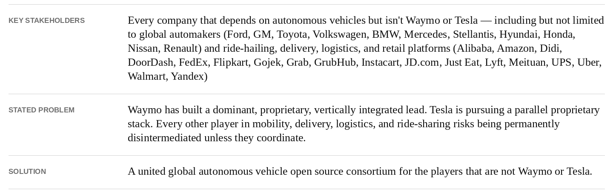
Activating this trillion-dollar coalition through open-source will benefit all members.
Benchmarks catalyze progress
Linux: comparisons led to funding (Kegel 2003; VeriTest 2003)
Mindcraft (1999)
Windows NT 4.0 / IIS vs. Red Hat 5.2 / Apache
2.5× Windows advantage.
VeriTest (2003)
Windows Server 2003 vs. Red Hat 2.1
1.66× Windows advantage.
- Red Hat reached $1B in annual revenue in 2012. (Red Hat 2012)
- Nonprofit established, companies now also pay developers directly. (The Linux Foundation 2009)
Open code attracts sustained investment when businesses depend on it.
Accelerating open research with the common task framework
The story of speech transcription
1970s: the demo culture in speech technology
Every group chooses its own test, and every approach looks promising
- Elaborate speech systems that consumed resources without yielding clear knowledge (Pierce 1969).
- Pushback from executives at Bell Labs and US government on potential value.
- Zero US funding for speech or translation research from 1975-1985.
1985–1991: speech adopts a common task framework
Same recordings, same scoring rules, comparable results (Pallett 1985; Wayne 1991)
- 1985: Pallett advocates the common task framework.
- 1991: NIST compares systems under this framework on shared Resource Management (RM) and Air Travel Information System (ATIS) corpora.
Share
Common dev split of speech recordings and transcripts
Test
Held-out recordings, scored by pre-defined metric
Compare
Anything goes, best method wins
Not everyone liked it
Reactions to the common task framework (Liberman 2015)
Many were skeptical
“You can’t turn water into gasoline, no matter what you measure.”
Others were disgruntled
“It’s like being in first grade again — you’re told exactly what to do, and then you’re tested over and over.”
But it worked!
Shared tests made progress visible (National Institute of Standards and Technology 2009)
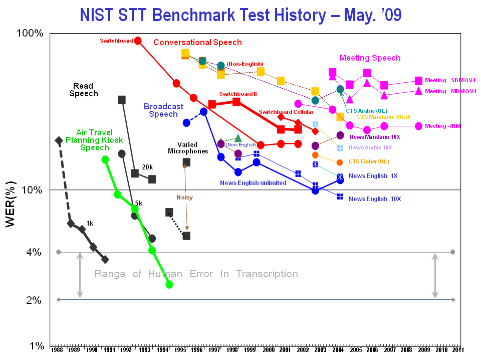
The common task framework has cemented itself
In speech, vision (Liu et al. 2019), language, and some sciences
- 1990s: no papers had benchmarks
- 2010s: no papers without benchmarks
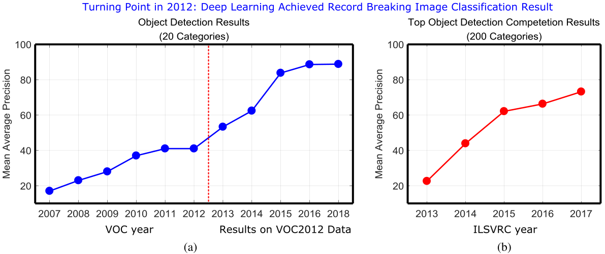
The battle for common task frameworks in driving
CARLA releases and challenges
The most impactful simulator for embodied AI
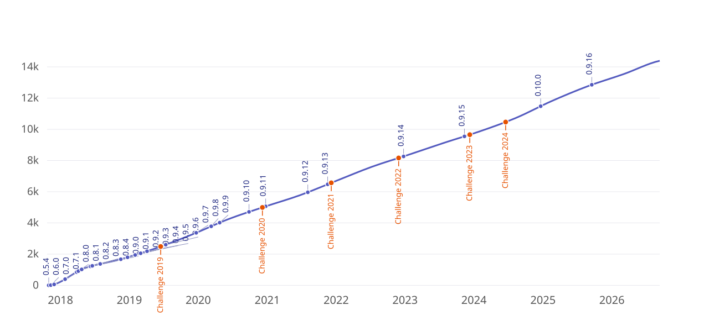
Evaluating entire driving stacks is hard
CARLA did not define standard local datasets or benchmarks (Jaeger et al. 2024)
- Matching permitted input spaces, conditioning, training towns, evaluation routes, safety-critical scenarios, and traffic density was non-trivial.
- Training on validation towns or disabling scenarios changes the task.
- Some papers introduce easier benchmarks under an existing benchmark’s name, making their methods appear stronger than the results justify.
- Papers claimed state of the art while trailing methods published years earlier.
- Errors propagated when authors copied tables from other papers.
We need an independent evaluator to run standardized local evaluations too.
Verifiable != reproducible
An independent server verifies the result, but cannot verify the paper’s explanation.
- Three leading Leaderboard 1.0 methods reproduced substantially below their reported scores, despite public code and models matching the papers.
- Their released system differed from the submitted system.
We need to enforce or encourage reproducibility.
It then became prohibitively expensive
Closed-loop outcomes vary with both simulation and model training.
- End-to-end methods can also have substantial training variance. Repeating simulation with one trained model does not measure that uncertainty.
3
Independently trained models
× 3
Evaluation repeats per model
= 9
Runs averaged
We need evaluation cheap enough to measure both training and simulation variance.
The breakdown of the common task framework
nuScenes planning and the return of mainstream open-loop evaluation
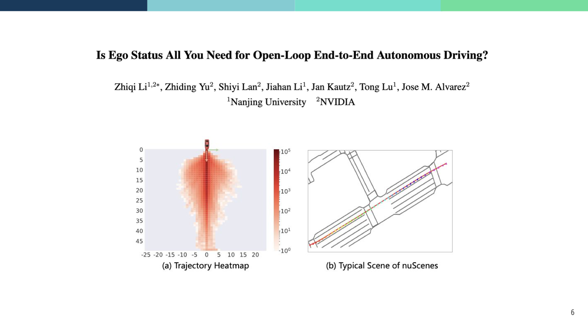
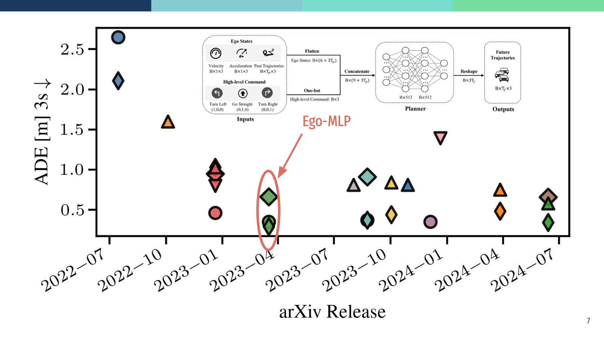
We need to define tasks that stop rewarding shortcut learning.
Takeaways
What a common task framework for driving needs
- Task design: stop rewarding shortcut learning.
- Affordability: cheap enough to measure training and simulation variance.
- Reproducibility: enforce or encourage reproducible results.
- Independent evaluation: standardized evaluations on an independent server.
Lightweight simulation with NAVSIM
Distance from a human is an unreliable target
Evaluating safety, comfort, and progress (Dauner et al. 2024)
Improving the test distribution
Filtering results in diverse scenes
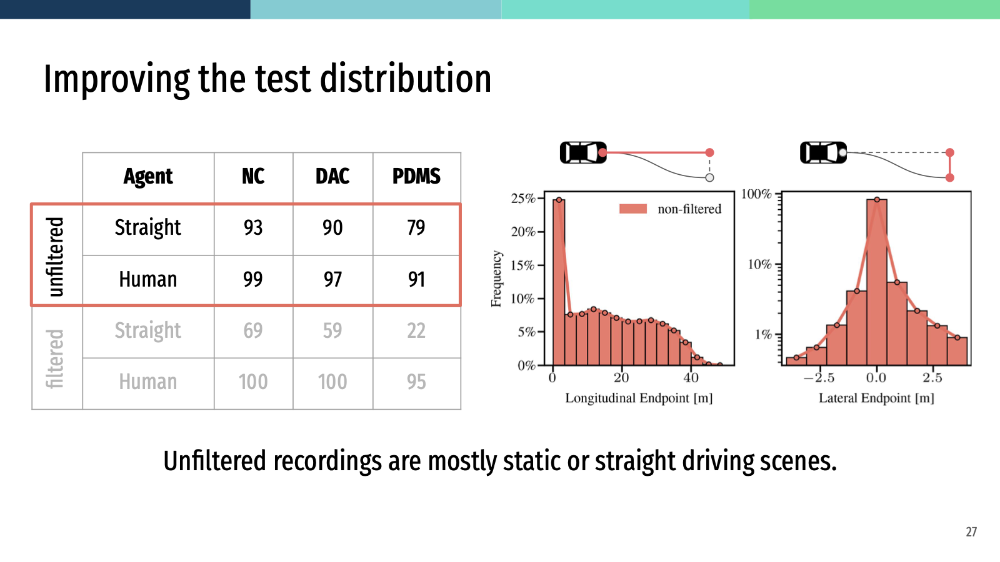
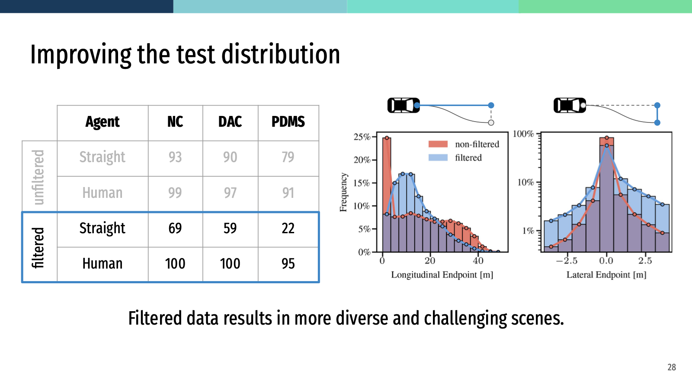
Shortcut learning from ego history ineffective.
Evaluating several possible futures for each test sample
3D Gaussian Splatting to measure recovery capability (Cao et al. 2025).
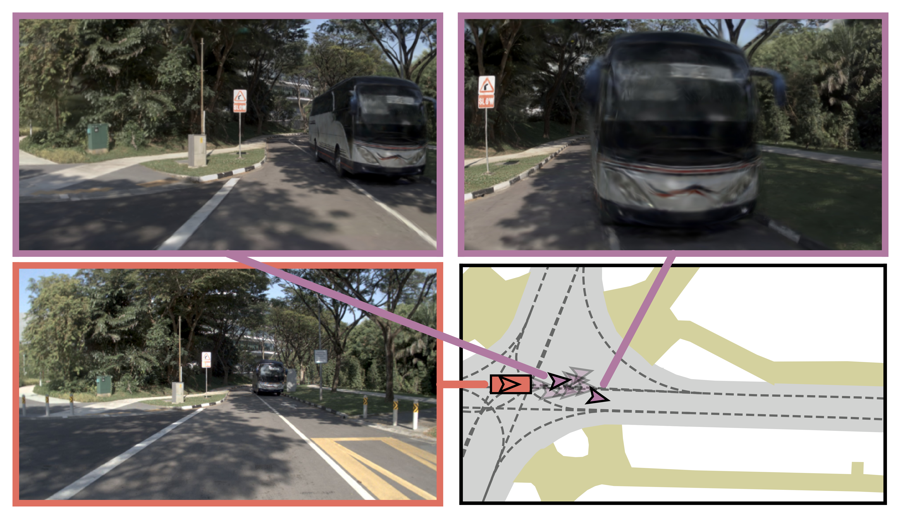
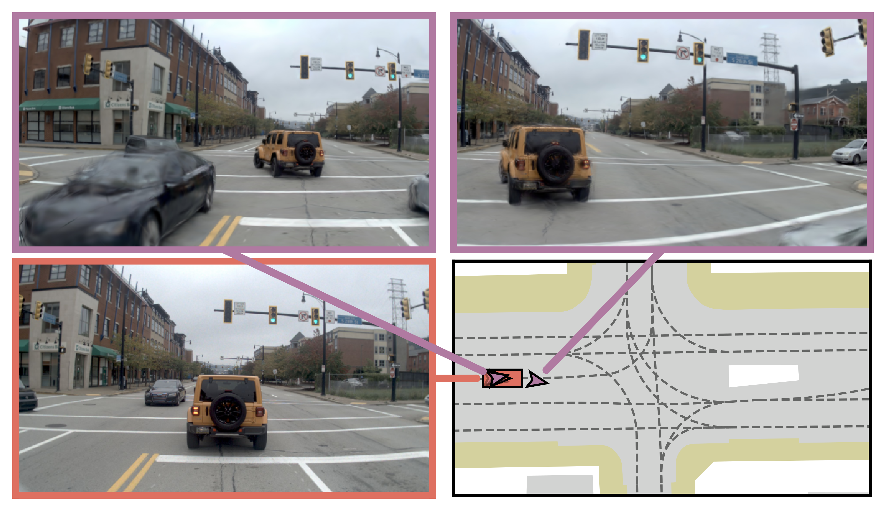
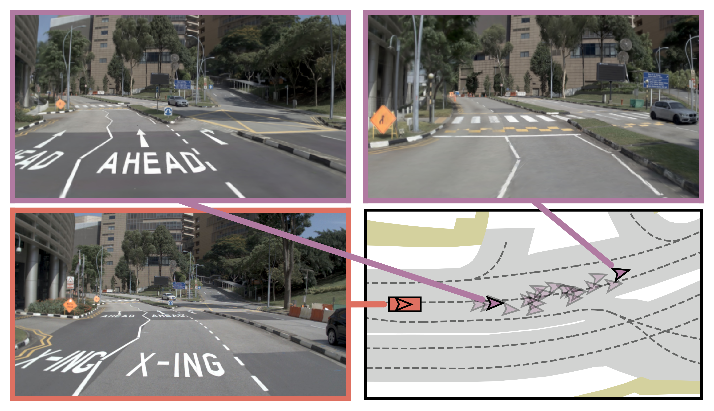
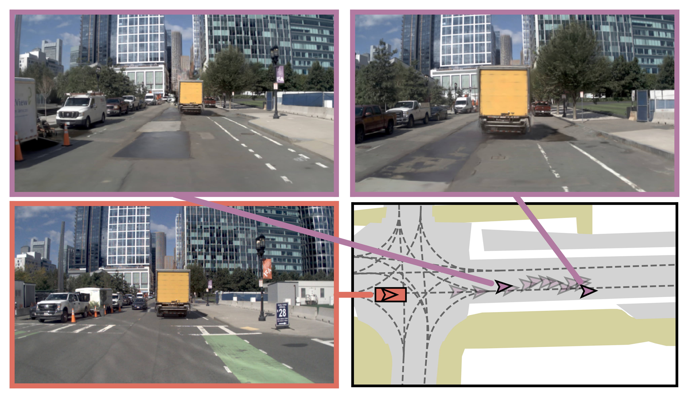
Pre-rendering and deterministic simulation improves affordability.
Weighting observations by proximity
Avoiding unsolvable states to prevent their penalties
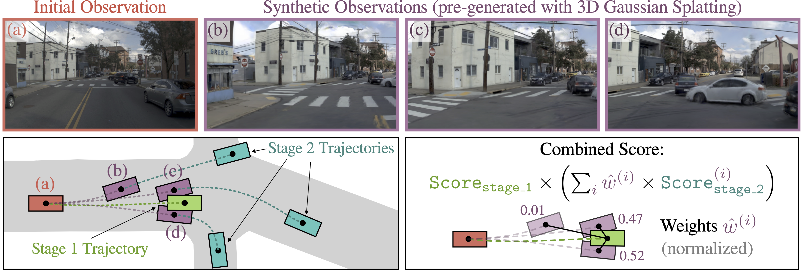
Pseudo-simulation predicts closed-loop performance
Displacement-based metrics severely underestimate rule-based planners
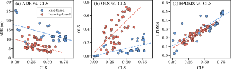
NAVSIM makes progress measurable
The next step is returning to closed-loop driving.
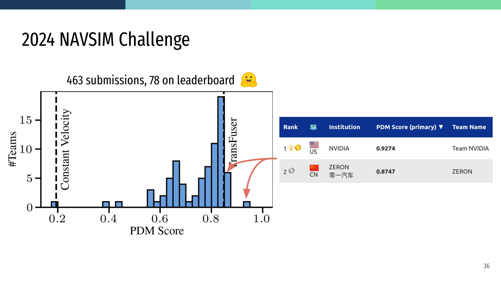
Enabled
Affordable, reproducible, independent evaluation for fast iteration.
Missing
Rapid, iterative decisions under realistic vehicle memory and timing constraints.
Live NAVSIM leaderboards
Closed-loop simulation at scale with AlpaSim
The AlpaSim challenge team

Two tracks with a single interface
Physical AI AV (1700 train hours)
nuPlan (120 train hours)
One devkit for any training dataset
A common task framework with AlpaSim
Realistic constraints: 16 GiB GPU memory and 10 Hz target planning frequency
Affordability
- Pipeline parallelism
- Constant engineering gains
- Organizer compute for challenge
Independent evaluation
- Thousands of private held-out scenes across ten countries
- Smaller, standardized local splits
Reproducibility
- Tech reports checked against containers
- Periodic cleanup for public leaderboard
Live AlpaSim leaderboard
Open research in benchmarking driving policies
Standardizing deployment to the real-world
From simulation research vehicle deployment
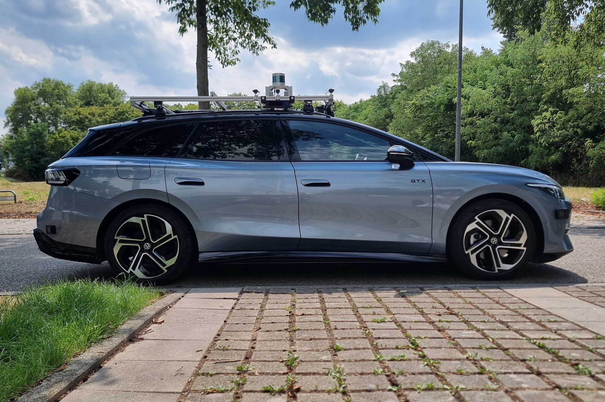
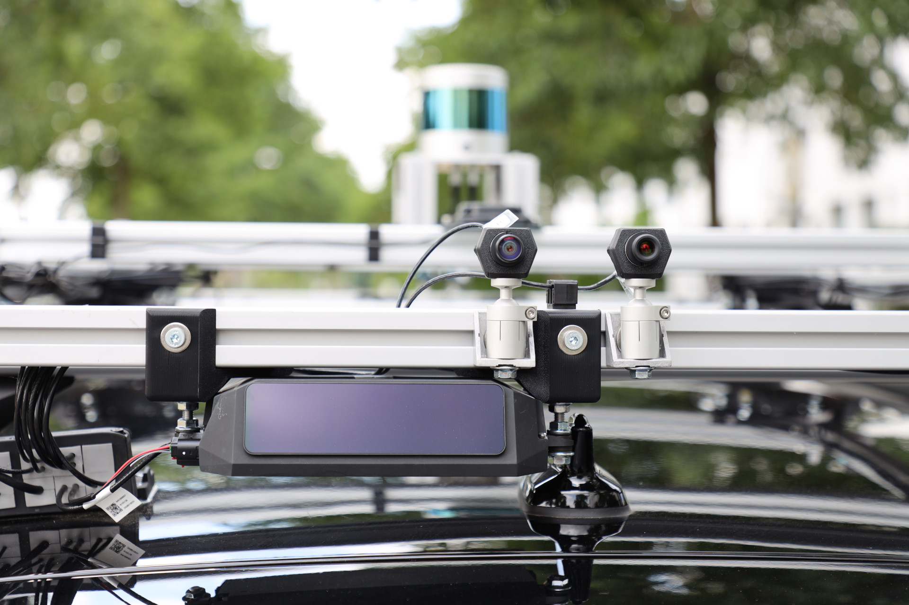
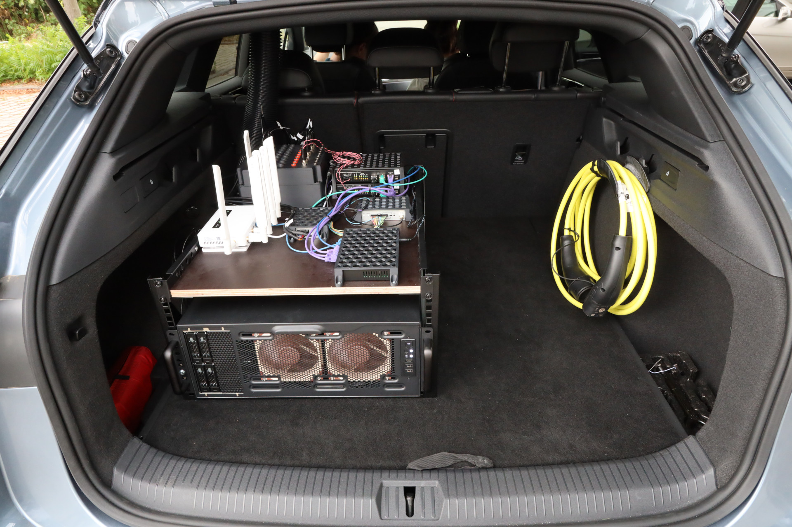
Multi-fidelity benchmarking
Multi-domain benchmarking
More diverse benchmarks can have less stable rankings (Zhang and Hardt 2024)
Learning to weight tasks
Item Response Theory: estimate ability, difficulty, and uncertainty together (Birnbaum 1968)
Context-aware evaluation
Frontier models can decide which rules matter (Sun et al. 2026)